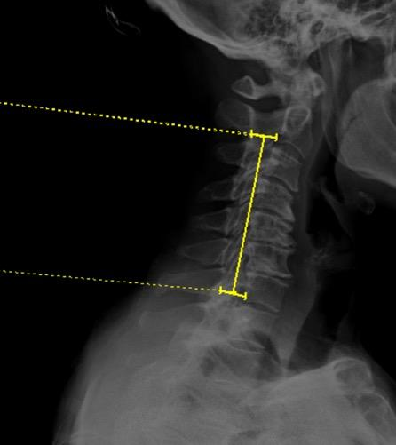
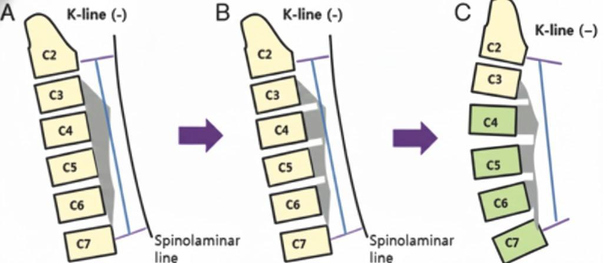

1) Description of Measurement
The K-Line is a line drawn between the midpoints of the anteroposterior (AP) diameter of the spinal canal at C2 and C7 on a neutral, standing lateral cervical spine X-ray. It was originally described by Fujiyoshi et al. (2008) as a single parameter that simultaneously evaluates both cervical sagittal alignment (kyphosis) and the size of ossification of the posterior longitudinal ligament (OPLL) to guide surgical decision-making.
The K-Line is classified as K-line (+) (positive) when the peak of the OPLL or anterior compressive pathology does not exceed (cross anterior to) the line, and K-line (–) (negative) when the peak of the OPLL exceeds the K-line. This classification is a key prognostic indicator: patients who are K-line (–) have been shown to have insufficient posterior spinal cord shift and significantly poorer neurological recovery after posterior decompression surgery (e.g., laminoplasty).
Clinical explanation: After posterior decompression, the spinal cord drifts posteriorly and away from anterior compressive lesions. In patients with significant kyphosis and/or a large OPLL mass (K-line negative), this posterior drift is insufficient, resulting in residual cord compression and poor outcomes. In such cases, an anterior cervical decompression and fusion (ACDF) approach or combined anterior-posterior surgery is generally recommended to adequately correct for kyphosis and/or remove elements of an ossified posterior longitudinal ligament.
2) Instructions to Measure
· Obtain a neutral, standing lateral cervical spine X-ray with adequate visualization from C2 to C7
· Identify the midpoint of the anteroposterior (AP) diameter of the spinal canal at C2.
o Measure the AP distance of the spinal canal at the C2 vertebral body level and mark the midpoint
· Identify the midpoint of the AP diameter of the spinal canal at C7.
o Similarly, measure and mark the midpoint of the spinal canal at C7
· Draw a straight line connecting the two midpoints — this is the K-Line
· Evaluate the relationship of the OPLL (or anterior compressive pathology) to the K-Line:
◦ K-line (+): the peak of the OPLL does not exceed (does not cross) the K-Line
◦ K-line (–): the peak of the OPLL exceeds (does cross) the K-Line
3) Normal vs. Pathologic Ranges
• K-line (+): OPLL does not cross the K-Line; indicates favorable cervical alignment with adequate canal space posterior to the lesion. Posterior decompression (laminoplasty) can achieve sufficient spinal cord drift and is expected to yield good neurological recovery.
• K-line (–): OPLL crosses the K-Line; reflects significant kyphosis and/or large OPLL mass compromising the spinal canal. Posterior decompression alone is unlikely to achieve adequate cord decompression. Anterior or combined surgical approaches are generally recommended
• Canal occupying ratio (COR) ≥ 50%: when combined with K-line (–) status, outcomes after posterior decompression are particularly poor; anterior decompression with fusion (ADF) is associated with superior JOA recovery in this subgroup. (Please find section on measuring COR within the CT Imaging Section linked here – “Measuring Canal Occupying Ratio” )
• K-line in dynamic positions: some patients may be K-line (–) in neutral but K-line (+) in extension; the K-Line should be assessed primarily on the neutral standing lateral radiograph per the original description
Key Criterion (Fujiyoshi et al.):
K-line (–) status on a neutral, standing lateral cervical spine X-ray predicts insufficient posterior spinal cord shift and poor neurological improvement after posterior decompression surgery for cervical OPLL. These patients should be considered for anterior or combined surgical approaches.
4) Important References
Fujiyoshi T, Yamazaki M, Kawabe J, et al. A new concept for making decisions regarding the surgical approach for cervical ossification of the posterior longitudinal ligament: the K-line. Spine (Phila Pa 1976). 2008 Dec 15;33(26):E990-3. doi: 10.1097/BRS.0b013e318188b300.
Taniyama T, Hirai T, Yamada T, et al. Modified K-line in magnetic resonance imaging predicts insufficient decompression of cervical laminoplasty. Spine (Phila Pa 1976). 2013 Mar 15;38(6):496-501. doi: 10.1097/BRS.0b013e318273a4f7.
Taniyama T, Hirai T, Yoshii T, et al. Modified K-line in magnetic resonance imaging predicts clinical outcome in patients with nonlordotic alignment after laminoplasty for cervical spondylotic myelopathy. Spine (Phila Pa 1976). 2014 Oct 1;39(21):E1261-8. doi: 10.1097/BRS.0000000000000531.
Ijima Y, Furuya T, Ota M, et al. The K-line in the cervical ossification of the posterior longitudinal ligament is different on plain radiographs and CT images. J Spine Surg. 2018 Jun;4(2):403-407. doi: 10.21037/jss.2018.06.01.
Tetreault L, Nakashima H, Kato S, et al. A systematic review of classification systems for cervical ossification of the posterior longitudinal ligament. Global Spine J. 2019 Feb;9(1 Suppl):85S-103S. doi: 10.1177/2192568217720421.
Wang Y, Chen X, Luo Y, Chen C, Cui R. Effect of K-line (+) or (–) on surgical outcomes in cervical OPLL: a meta-analysis. Medicine (Baltimore). 2024 Nov 22;103(47):e40596. doi: 10.1097/MD.0000000000040596.
Park SJ, Lee CS, Chung SS, et al. The role of K-line and canal-occupying ratio in surgical outcomes for multilevel cervical ossification of the posterior longitudinal ligament: a retrospective multicenter study. Neurospine. 2025 Jun;22(2):526-537. doi: 10.14245/ns.2448938.469.
Wang Y, Chen X, Luo Y, Chen C, Cui R. Effect of K-line (−) or (+) on surgical outcomes in cervical OPLL: a meta-analysis. Medicine (Baltimore). 2024 Nov 22;103(47):e40596. doi: 10.1097/MD.0000000000040596.
5) Other info….
The K-Line uniquely combines two critical variables, cervical alignment and OPLL burden, into a single radiographic parameter.
The K-Line must be measured on a standing neutral lateral radiograph (not supine CT). Studies have demonstrated that K-line determinations on CT-MPR (supine) can differ from those on standing X-ray due to changes in cervical alignment with positioning, which may alter the K-line classification in up to 11% of cases (Ijima et al.).
A modified K-Line has been described by Taniyama et al. for use on MRI (T1-weighted midsagittal images), connecting the midpoints of the spinal cord at C2 and C7. A distance of ≤ 4.0 mm between the most prominent ventral pathology and the modified K-Line predicts inadequate decompression after laminoplasty. This study was limited by sample size and sensitivity, and specificity were predicted at 80% and 80.6% respectively.
K-line (+) patients who undergo posterior decompression, namely laminoplasty, demonstrate significantly higher postoperative JOA scores, better recovery rates, and lower NDI scores compared to K-line (–) patients.
Consider evaluating the K-Line in conjunction with C2–C7 Cobb angle, T1 slope, C2 slope, canal occupying ratio (COR), and OPLL morphology type (segmental, continuous, mixed, localized) for comprehensive preoperative surgical planning.